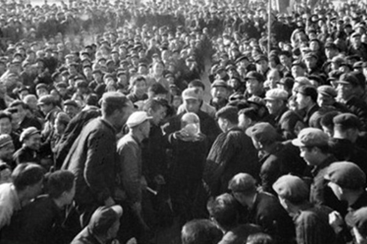
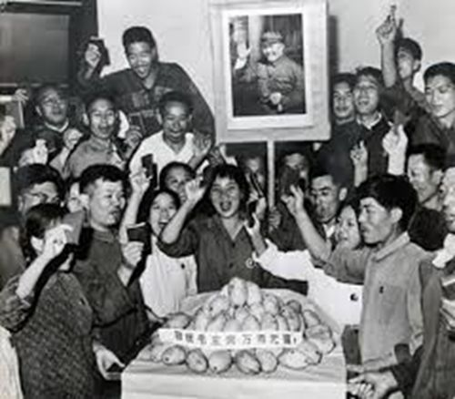

|
回目录 回主页 |
這是發生在中國二十世紀里最荒唐的時代里的故事。1968年，當文革正進行得轟轟烈烈之際，一場持續了十八個月之久的〝芒果崇拜〞在千百萬工人中興起，並進一步把對毛澤東的崇拜推到更瘋狂的地步。芒果成為玻璃罩中的〝聖果〞，引發全國械鬥血案。複製的假芒果傳到四川甕安，漢源縣富林鎮有個叫韓光第的老牙醫，看見玻璃罩里的金芒果，順口說了句：〝芒果像一條紅薯，沒什麼看頭，有什麼稀罕的〞。

這是發生在中國二十世紀里最荒唐的時代里的故事。1968年，當文革正進行得轟轟烈烈之際，一場持續了十八個月之久的〝芒果崇拜〞在千百萬工人中興起，並進一步把對毛澤東的崇拜推到更瘋狂的地步。芒果成為玻璃罩中的〝聖果〞，引發全國械鬥血案。
巴基斯坦送毛澤東一籃芒果，掀起一場芒果造神運動，引發全國械鬥血案。 1968年8月，當時的巴基斯坦外交部長訪問北京，送給中共黨魁毛澤東一籃芒果。毛澤東不喜歡這種黏黏膩膩又黃又甜的水果，順手把這籃大約40個芒果給了清華大學的工宣隊。而正是這藍芒果，在全國範圍內，很快掀起了一陣接送芒果、感恩戴德的狂潮。 芒果革命的廟會進駐清華大學管理知識份子〝臭老九〞的工宣隊員們，接到芒果後受寵若驚，決定〝讓所有工人同志們分享〞，於是向北京的所有大工廠各分送一個芒果。但這批芒果不過十幾個，很快就不夠送了。有人想出了法子，用蠟制芒果代替。在對毛的狂熱崇拜時期，〝芒果〞很快就變成了個人崇拜登峰造極時期，供奉在玻璃罩內的聖果。很快，這股轉贈芒果的熱浪席捲各地。長春遊行，四川遊行，福建和濟南的代表們捧起玻璃鏡框盛放的蠟芒果，小夥子抬起大型的絲絨台座，安置一枚蠟芒果。全國載歌載舞，歡慶毛澤東關懷工人階級貧下中農，表達把〝文化大革命〞進行到底的決心。贈送禮品激發了人們的親族關係想像。幾個芒果就能夠引起一波接一波狂熱的忠誠，這正是毛澤東發動〝文化大革命〞所要達到的真正意圖。 《人民日報》在毛澤東向工宣隊贈送芒果的第二天，在頭版頭條刊登充滿激情的文章說：〝這是對全國工人階級和廣大工農兵群眾的最大鼓舞，最大關懷，最大教育，最大鞭策!〞 分到一個芒果的北京第一機床廠決定讓上海的姐妹廠也分享毛澤東的關懷，並特別租了一架飛機，專門護送這個芒果去上海。 受贈的北京針織總廠接到芒果以後，工人們舉行了一個盛大的歡迎儀式，把芒果用蠟封存起來，供奉在大廳的一個壇上，工人們排著隊一一鞠躬致敬。可惜那時不懂防腐，蠟封芒果之前沒有消毒。沒過幾天後，芒果開始腐爛。 於是，革委會決定將蠟封去掉、剝皮，然後燒開一大鍋水，把芒果肉煮成湯，再舉行一個喝聖水的儀式。工人們排成一隊，每人都喝了一口芒果湯水。於是這個已經腐爛的芒果水成了〝聖水〞，喝到〝聖水〞的工人捨不得吞下去，含在口裡帶回家讓全家人品嘗。 〝看到金芒果，彷佛見到偉大領袖毛主席……〞成了當時的流行詩。 芒果由此游遍大江南北、長城內外，最終成了人們表忠心的對像。中共的宣傳部門也迅速生產出一系列芒果主題的日用品，床單、托盤、臉盆，芒果味兒的香皂、香煙。 有人把歷次運動里，東西南北中的盲目的群體事件稱作〝革命的廟會〞，用來形容〝文革〞和〝芒果事件〞再合適不過了。

巴基斯坦送毛澤東一籃芒果，掀起一場芒果造神運動。 芒果引發當權派、造反派之爭為了政冶的需要，首都〝工宣隊〞把那批芒果及複製品分贈給全國各省、市、自治區〝工宣隊〞，再由他們轉贈給各地、州、市。但傳到最下面最基層時，已經無法再複製蠟芒果了，只得將蠟芒果攝成照片，送到所轄各縣、市，於是一連串想不到的故亊發生了。貴州省甕安縣是1967年3月19日，由〝左派〞率先奪了〝走資本主義道路當權派〞的權。1968年6月12日，貴州省革委、黔南州革委和〝工宣隊〞支持在野〝造反派〞進行反奪權。受壓者一下子變成了掌權者；而原先的掌權派一下子又變成了在野派。無論哪一派都聲稱自己最忠於毛，都攻擊對方〝反毛澤東思想〞，都認為自己才有權接受賜予的芒果。 黔南州〝工宣隊〞從都勻市送芒果到甕安縣的那天，縣裡的兩派各組織了數千人齊集縣體育場。事前，雙方都作了一些準備，除國旗、戰鬥隊隊旗、巨幅毛像外，得力幹將們還扛著棍棒、鋤柄等武鬥器械，有的還在鋤柄的較粗那一端釘上若干鐵釘，好像《水滸》中霹靂火秦明使用的〝狼牙棒〞似的。 在野派沒有行政權，就搶先行一步，趁掌權派隊伍尾大不掉之機，迅速抄近路去接芒果。但他們代表不了縣革委，州〝工宣隊〞拒絕將芒果予之，結果無功而返。 他們在返回途中，在離縣城南三公里處的富水田一帶與掌權派的大隊人馬遭遇，雙方劍拔弩張，殺氣騰騰，一場武鬥眼看就要爆發。但雙方都是以多人抬著兩米多高的巨幅毛像為先導，〝毛主席〞成了各自隊伍的前鋒，誰也不敢冒天下之大不韙，衝撞毛像，誰也不敢當著〝欽差〞的面，承擔〝反對偉大領袖毛主席〞的罪名。 州里護送芒果的〝欽差〞當然只認〝縣革委〞，掌權一方自然接到了芒果，縣革委主任把芒果接到手裡，定睛一看，原來是一張由精緻相框嵌著的芒果照片。 掌權派隨後要在縣體育場開隆重的迎接芒果的大會。主席台上唯一的一張桌子上供著那張芒果照片，兩排長椅八字形分擺於主席台的兩邊，當時縣革委的頭目們分坐其上。 大會還未開始，一在野派的幹將躍上主席台來搶奪芒果照片。會場出現騷動，雙方就要開打了。好在掌權派人多勢眾，頭頭們也不想擴大事端，於是大會也不敢再開下去了，數千人簇擁著〝芒果〞匆匆回到〝縣革委〞所在的原縣政府大樓里。 當晚，掌權派組織人到照相館將芒果照片翻拍放大，沖洗出48張，又組織七八個木匠連夜趕製48個相框；縣革委又組織大小頭目分帶48組〝工宣隊〞，第二天將再翻拍的模糊不清灰濛濛的芒果照片分送到全縣48個公社(相當於鄉)，讓毛的〝恩情〞到達全縣的每一個角落。 其中一組〝工宣隊〞護著一張芒果照片來到草壙區太平公社。太平公社的社員（農民）居然也是兩派，在太平公社管委會門口分站兩堆，怒目相視，高呼著〝毛主席萬歲〞、〝祝毛主席萬壽無疆〞、〝誓死捍衛毛主席的革命路線〞等口號，都聲稱自己最忠於毛主席，最有權得到毛主席的恩賜。好在農民離〝權〞的距離更遠，也並未真要為這張照片而打起來。〝工宣隊〞說了些〝貧下中農是一家〞、〝要一碗水端平〞之類的安撫話，事態就平息下去了。 芒果引發的血案芒果一路傳遍全國，在人們集體狂熱失去理智時，有個別清醒的人下場就可想而知。複製的假芒果傳到四川甕安，漢源縣富林鎮有個叫韓光第的老牙醫，看見玻璃罩里的金芒果，順口說了句：〝芒果像一條紅薯，沒什麼看頭，有什麼稀罕的〞。結果專政機關以〝惡毒攻擊〞的罪名逮捕了他，長期關押之後，1970年被以"現行反革命"罪判處死刑，在富林鎮郊被槍斃。關於韓光第被逮捕和槍殺的經過，當時鎮上的一個小學生在３０年後發表了一篇文章，標題是《不堪回首》。 文中寫道：我想起文革期間一件發生在我的家鄉小鎮的真實的事。具體是哪一年我說不上來了，就是毛主席給什麼工宣隊送芒果的時候。 我們家鄉，出產許多水果，從春天三月開始，陸續上市的有櫻桃、枇杷、杏、李子、桃、蘋果、梨、棗子、柿子，板栗、核桃、瓜子，還有少量的桂圓、香蕉。但是卻不出產芒果，甚至都沒聽說過。 那天，我們小鎮好熱鬧啊。敲鑼打鼓，人山人海，大家都去爭先恐後地看什麼是芒果。特別是毛主席送的芒果！ 那時我大約十二三歲，才一米三不到，踮著腳尖，從人群中看去，只見在幾個手持鋼槍的當兵的威武莊嚴的站在一輛解放牌卡車的車廂兩邊，中間是我們縣的縣革委主任，只見他雙手托著一個盤子，那盤子用了一層大紅顏色的金絲絨來鋪底，盤子中央放著一個形狀像紅薯似的橢圓型的東西----那就是芒果，是毛主席送給工宣隊的芒果！看了之後，卻感到有些小小失望，原來那芒果也就是那個樣！與紅薯實在差不多（也許是在全國巡迴展覽，那芒果都已經變了形）。 我怏怏地回家了。帶著一種莫名的失落。也許是事前把它想得太美好了吧...... 第二天，我還沒起床，突然被一陣敲門聲驚醒了。 原來是我的表叔來了，表叔家住在第二居民段，卻離我家只有五百米左右（我們家在三段），可是他從來沒有在清晨就來串門的，從來沒有過！ 我豎起耳朵，仔細聽..... 〝么舅〞，表叔對我外公說，〝韓大爺被公安局抓走了......〞 〝為什麼？〞外公急急的問。 韓大爺是我外公的一個熟人，自己開了一間私人牙醫館，外公的假牙就是韓大爺給裝的。 〝說是現行反革命，罪行是攻擊毛主席......〞 〝他說什麼了？〞 〝他昨天看芒果的時候，說那‘芒果像一條紅薯，沒什麼看頭，有什麼稀罕的！〞 結果被有人告到縣革委去了，就把他給抓起來了....，還是昨天半夜12點去抓的〞 表叔一口氣說完這些，看了看我外公，〝么舅，你可別亂講話吶，現在人心卜測......。〞 〝唉！看你說的，你么舅什麼沒見過。我知道分寸！〞 外公嘆了一口氣"快回去吧，你還要上班呢。別誤了點。〞 表叔走了，外公把我們姐弟全叫起來，告訴我們，叫我們不準到外面亂說話，亂說話要被公安局抓去的。記得那時我真的很害怕，真的怕公安局來抓我，因為我也想過那芒果像紅薯的...... 只因為說了這麼一句話，韓大爺被抓進了公安局，又因為韓大爺不服氣，在局子里依然向兒子們交代要伸冤，又被定為不思悔改，最後韓大爺被判處了死刑，罪名是現行反革命。 行刑那天韓光第先被五花大綁，押在一輛解放牌卡車上遊街示眾。有一個士兵抓住韓光第的頭髮，把他的臉提起來。人們看到他的臉的顏色蒼白極了。游完街以後，卡車開到乾溝里－－漢源鎮的鎮郊，韓光第在那裡被槍斃。 槍斃韓大爺那天，外公一個人喝了差不多一斤白酒，我見他的眼睛裡似乎含著淚花..... 韓大爺死後，他的三個兒子全部被趕下鄉去了，他的老伴受不了這種突然的打擊，也去天國陪她的丈夫了，一個好端端的家就這麼家破人亡了。從此，我們小鎮上再也沒有私人牙醫館了..... 江青試圖重燃芒果瘋據稱，芒果瘋在一年半之後降溫。沒過多久，停電時人們開始用丟棄的假芒果當蠟燭。1974年，菲律賓前第一夫人伊梅爾達．馬科斯帶著一箱菲律賓國寶級水果——芒果去中國。毛澤東的妻子江青試圖藉機重燃昔日那陣芒果瘋，於是把芒果又送給了工人。 轉年，毛病重。江青下令拍攝電影〝芒果之歌〞，來藉此鞏固提升自己的地位。但是發行不久，江青就被逮捕，影片停止公映。 這成了芒果崇拜熱的最後一個篇章。 【阿波羅新聞網 2018-02-20 訊】 |
回目录 回主页 |